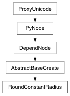

class counterpart of mel function roundConstantRadius
This command generates constant radius NURBS fillets and NURBS corner surfaces for matching edge pairs on NURBS surfaces. An edge pair is a matching pair of surface isoparms or trim edges. This command can handle more than one edge pair at a time. This command can also handle compoundedges, which is where an edge pair is composed of more than two surfaces. Use the -saand -sbflags in this case. The results from this command are three surface var groups plus the name of the new roundConstantRadius dependency node, if history was on. The 1st var group contains trimmed copies of the original surfaces. The 2nd var group contains the new NURBS fillet surfaces. The 3rd var group contains the new NURBS corners (if any). A simple example of an edge pair is an edge of a NURBS cube, where two faces of the cube meet. This command generates a NURBS fillet at the edge and trims back the faces. Another example is a NURBS cylinder with a planar trim surface cap. This command will create a NURBS fillet where the cap meets the the cylinder and will trim back the cap and the cylinder. Another example involves all 12 edges of a NURBS cube. NURBS fillets are created where any face meets another face. NURBS corners are created whenever 3 edges meet at a corner.